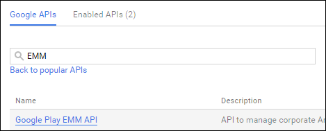

Configure the Netskope App with AirWatch for Android for Work Managed Configurations
The Netskope app supports the Android for Work Managed Configurations with AirWatch. This section describes how to configure AirWatch for Android for Work so the Netskope app can accept Android Managed Configurations. For this procedure you'll need the Organization ID value from the Netskope UI (Settings > Security Cloud Platform > Netskope Client > MDM Distribution > Create VPN Configuration).
Note
Organzation ID is case-sensitive.
Deploying the Netskope app Android for Work Managed Configurations consists of these procedures:
Enable EMM and Admin SDK APIs in the Google APIs console.
Enable API access and authorize client access in the Google Admin console.
Integrate Android for Work with AirWatch.
Approve applications in Airwatch.
Assign applications in Airwatch.
Enable EMM and Admin SDK APIs
To enable EMM and Admin SDKs API access in the Google Developer console:
Go to
https:console.developer.google.comand sign in to your account.On the Select a Project dropdown list, select Create a Project.
Enter a project name (like AirWatchApp) for Project Name, and then click Show advanced options.
Select the App Engine location closest to you, and then click Create.
In the Search field, enter
EMM. The Google Play EMM API link appears. Click Google Play EMM API and then click Enable.
Click API in the left frame, enter
Admin SDKin the Search field. The Admin SDK link appears.
Click Admin SDK and then click Enable.
Click Credentials in the left panel, and then click Create Credentials and Service Account Key.

On the Credentials page, select App Engine default service account from the Service Account dropdown list, select P12 for Key Type, and then click Create.
The new private key is downloaded to your system. Make a note of where it's located, and also note the password for this file:
notasecret. You will need these later to configure AirWatch. When finished, click Close.Open the page menu dropdown and select IAM & Admin. Select Service Accounts, and copy the email address for the App Engine default service account that is in the Service Account ID column. Save this email address; you will need this to configure API client access in the Google Admin Console and also in AirWatch.
Enable API Access and Authorize Client Access
To enable API access and authorize API client access in the Google Admin console:
Go to
https://admin.google.comand sign in to your admin account.In the Google Admin Console, select Security, and then select API Reference to ensure Enable API access is enabled.

Scroll down and select Advanced Settings (you may have to click Show more to see it).
Select Manage API client access.

In the Client Name field, enter the email address (Service Account ID) you copied from the Google API page.
In the One or More API Scopes field, enter
https://www.googleapis.com/auth/admin.directory.user, and the click Authorize.Go to Security > Android for Work Settings > Manage EMM Provider. Generate the EMM token and copy it. You will need this for AirWatch.
Integrate Android for Work in AirWatch
To integrate Android for Work in AirWatch:
Sign in to the AirWatch console and go to Devices > Device Settings > Android > Android for Work and click Configure.
Click Upload Token. In the Domain field, provide the email domain that you registered with Android for Work (example:
gotskope.com).Enter the EMM Token you obtained from the Google Admin console in the Enterprise Token field, and then click Next.
Select No for the In the Create Google account during enrollment based on enrolled user's email address field.
Select No for the In the Use SAML for Google account authentication field
In the Google Admin Console Setting section, enter the email address of the Google Admin Account (like
nsuser1@gotskope.com) in the Google Admin Email Address field.
In the Google Developer Console Settings section, enter the email address from the Google API console in the Service Account Email Address field (it ends with
~gserviceaccount.com).
Click Upload and upload the P12 certificate downloaded from the Google API console. The password is:
notasecret.Click Finish.
About Android for Work Public Apps in AirWatch
Applications configured for AirWatch and Android for Work have the same functionality as their counterparts from the Google Play Store.
Configurations for apps in the AirWatch Admin console are passed to the Netskope Client via the Management Configuration framework.
Approve Applications in AirWatch
To approve Android for Work apps in AirWatch:
In the AirWatch Admin console, go to Apps & Books > Applications > List View > Public and click Add Application.
Enter the organization group from which the application uploads in Managed By.
Select Android for Platform.
Select Import from Play to retrieve a list of approved applications to add to the AirWatch Admin console.
Click Next and then choose the desired applications for import.
Click Import.
Assign Applications
To locate approved applications and assign applications to devices in AirWatch:
In the AirWatch Admin console, go to Apps & Books > Applications > List View > Public.
Select the app you just imported select Edit.
Click Assignment.
Select an existing smart group or create a new one in the Assigned Smart Groups field.
Click Deployment to configure the application and control availability.
Enter these parameters:
Push Mode: Set the application to install automatically (auto) or manually (on demand) when needed.
Auto: Deploys an application upon device enrollment using the AirWatch App Catalog. If a device is enrolled in AirWatch, this option silently installs the application on devices.
On Demand: Deploys applications to the AirWatch App Catalog to enable device users to install when users choose to do so.
Send Application Configuration: Enable this checkbox.
Application Configuration: Enter the key/value information for these fields:
Enter
User Email Addressand{EmailAddress}for the Configuration Key and Configuration Value, respectively.Enter
tokenand your<Orgkey>value (Organization ID in the Netkkope UI) for the Configuration Key and Configuration Value, respectively.Enter
hostand theaddon-<tenant hostname>.goskope.comvalue for the Configuration Key and Configuration Value, respectively.Note
For deployments with release 46 and above, use the above domain name. For deployment with release 45 and lower, use
addon.goskope.com. For international deployments, use ~.eu.goskope.comor ~.de.goskope.com.To use the Device Classification function in Netskope, click Add and enter
ns_mdm_checkfor the key and the value from the Netskope UI (Settings > Manage > Device Classification > Managed Config) for the Configuration Key and Configuration Value, respectively.
When finished, click Save and Publish.